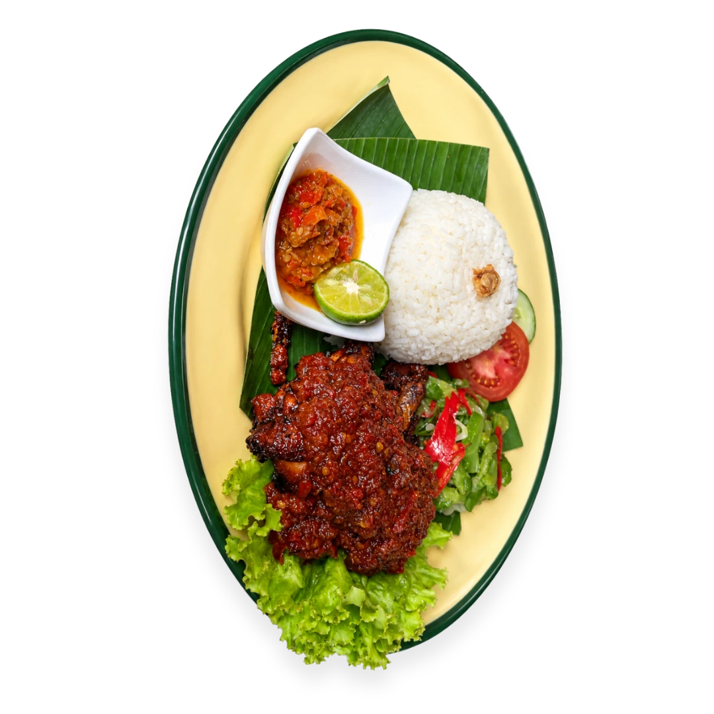
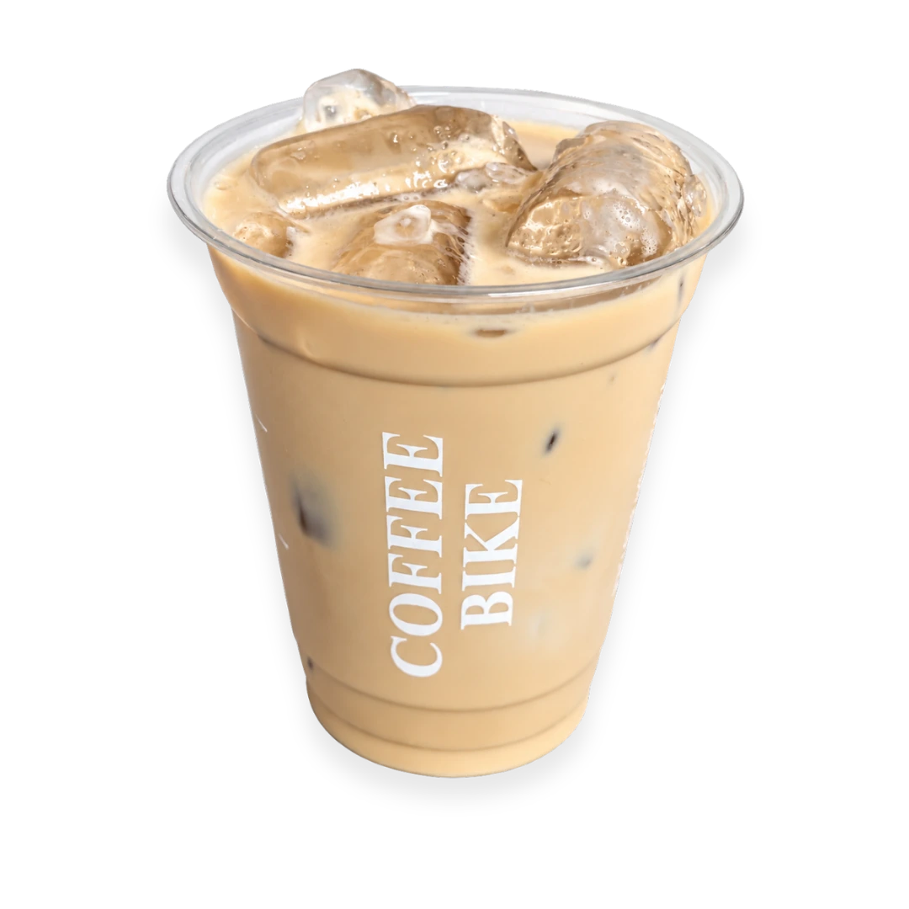
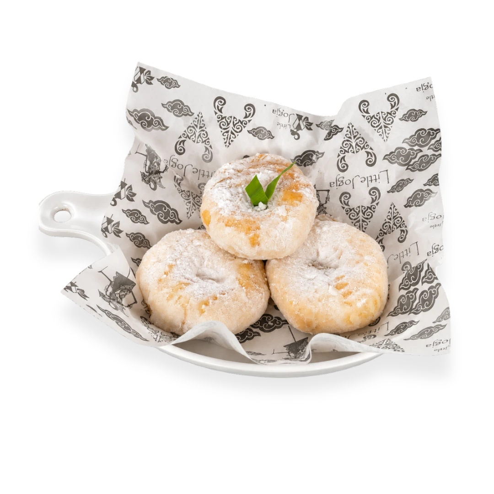

01Seri
↗
Diseduh untuk jeda
Seri
kopi.
- Americano Original
- Coconut Americano
- Rum Americano
- Helena Kopi melati dan blueberry
- Americano Soda Americano dengan sentuhan soda
COFFEE · LITTLE JOGJA · PETAMBURAN
Kopi yang dibuat dengan hati, hidangan yang terasa akrab, dan ruang untuk menikmati harimu sendiri.
Coffee Bike · Jakarta Barat · sejak 2021
Coffee Bike adalah ruang untuk menikmati kopi, menyantap hidangan, bekerja, dan bertemu orang-orang terdekat.
Mampir untuk menyelesaikan pekerjaan atau duduk lebih lama. Pilih sendiri cara terbaik untuk menikmati harimu.
ruangmu, ritmemu ♡Hidangan khas, suasana santai
Nasi, lauk berbumbu, sambal, dan camilan rumahan disajikan untuk menemani waktu santaimu.
Jelajahi menu makanan
Ruang untuk bekerja dan berkumpul
Temukan ruang yang pas untuk rencana dan kebutuhanmu.
Area nyaman untuk bekerja, belajar, atau fokus sejenak.
↗Ruang untuk berbagai acara, dengan kapasitas hingga 30 orang.
↗Ruang lebih tenang untuk pertemuan dan kebutuhan khusus.
↗Perangkat presentasi untuk rapat, kelas, dan acara.
↗Temani waktu bersantai dengan suasana musik di kedai.
↗Koneksi internet untuk bekerja dan tetap terhubung.
↗Momen kecil di Coffee Bike
Secangkir kopi.
Waktu yang lebih lapang.


Ruangmu,
ritmemu.
Mampir, duduk lebih lama
Coffee Bike · Jakarta Barat
Ikuti kabar terbaru
Sampai jumpa
di sana.
Temukan cerita, suasana, dan menu terbaru Coffee Bike di Instagram dan TikTok.